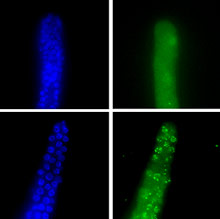

News Archives : 2004 : Matthew Michael Promoted to Associate Professor
by Gloria Parkinson
June 7, 2004
Cell Cycle Regulation: The Research of Matthew Michael
Matthew Michael admits to following his nose when it comes to his research interests. Growing up in the northern California Bay Area in a nonscientific family, Michael entered the University of California at Berkeley intending to major in literature, with the dream of becoming another Ernest Hemingway. But early in his undergraduate career, Michael's fascination with fictitious adventures in faraway lands was overtaken by the alluring and very real territory of genetic research. The aspect of genetics that captivated Michael was the notion of examining complicated biological processes by doing relatively simple experiments, namely, genetic crosses. From then on he was hooked on using genetics as a strategy to understand biology.
Following the Scent
Michael's scientific career got off to a lively start. His first paid job was as a lab assistant in David Bentley's lab at UC–Berkeley, where Michael maintained a colony of lively grasshoppers. Although his career has continued apace, Michael has never had to chase subsequent experimental subjects around the inside of his shirt!
Happily, Michael discovered his true calling–cell biology and the basic pathways and processes that govern how cells work–when he was a graduate student with Gideon Dreyfuss at the University of Pennsylvania. And he continues to pursue aspects of this area of research today in his Harvard lab. His work in nuclear export while at Penn established that rather than proteins moving from the cell nucleus to the cytoplasm by means of diffusion, as many believed at that time, a signal-mediated, active transport pathway was actually responsible for nuclear export. Michael is understandably proud of this finding.
A pillar of Michael's current Harvard research employs the Xenopus egg extract system, a methodology he was introduced to while a postdoc in John Newport's lab at the University of California at San Diego. Newport is one of the world's leading experts in the use of the Xenopus egg extract system to study how the cell nucleus is built. The large amphibious egg contains all the proteins important for the basic cell biology processes. Once the proteins have been extracted from the egg, they can be used as an in vitro system to study relatively simple cellular reactions by merely adding DNA. At the time Michael joined in 1997 Newport's lab was investigating replication and cell control of DNA replication. While it was well documented that S phase, or DNA synthesis phase, somehow governed mitosis, quite how was not known. Although not his original research project, Michael was intrigued. "I caught the bug and decided to work on that," he recalls, describing his change of plan. "That's how I got involved in cell cycle control and DNA replication."
If DNA replication is blocked in some way, the cell cycle stops, and the cell fails to enter mitosis. Michael set out to discover how far along the replication process needed to be before the mitotic arrest signal was generated. He found that when replication was inhibited at an early step, the system didn't recognize a problem and the cell entered mitosis. He was also able to map the primer synthesis step, which was responsible for triggering the arrest of mitosis.
|  DNA Repair Factories in C. elegans (more) |
Michael's Harvard lab, which he established in the fall of 2000, builds on his previous work but poses a new question: how does DNA replication deal with the major problem of DNA damage? For when the DNA template is damaged, the result can sometimes be a roadblock–a physical barrier to the movement of the replication fork. Cells have evolved sophisticated ways of dealing with the problem, but why it happens in the first place is still not understood. The Michael lab is endeavoring to bring some understanding to this critical moment in the cell cycle by studying the mechanisms and pathways that affect genome stability.
The lab uses two experimental systems: Xenopus egg extract to study mechanisms and pathways and C. elegans for genetic analysis . Already the lab has come a long way. Michael credits this to his good fortune to have had two talented young scientists–Matthew Stokes and Antonia Holway–with him from the get-go. Stokes, working with Xenopus egg extracts, has discovered a novel pathway via which damaged DNA controls the replication of DNA. Meaning, the presence of damage generates a signal that activates an inhibitor that then blocks further DNA replication. Using the technically challenging approaches of biochemical fractionation and purification, Stokes is close to purifying the inhibitor. "Stokes has taken the high road, and it's very difficult work. There are other ways one could address the issue that are less direct, but certainly technically less demanding," says Michael.
Meanwhile, Antonia Holway has developed specific assays in C. elegans to look for the genes necessary for DNA replication to survive damage. Michael, who also credits MCB department colleague Craig Hunter for his help with C. elegans , is collaborating with Holway on functional genomic aspects of the lab's research. Holway has already discovered a novel genetic pathway in C. elegans embryos that allows the worms to complete DNA replication in the presence of DNA damage. This is a relevant finding. Many investigators have shown that checkpoints, especially when cells are in vulnerable S phase, can promote replication in the presence of damage. Early embryonic cell cycles, however, run in the absence of checkpoints. How then do these cells overcome damage to complete DNA replication? It seems there are independent mechanisms and thus far Holway has identified two genes required for the process. This is a good discovery in and of itself, but it also has a connection to human cancer biology. Since checkpoints are typically weakened in cancer cells, the question arises: how do cancer cells overcome DNA damage? This is especially relevant for chemotherapy treatment, which is essentially a DNA damaging agent. Effective chemotherapy works by damaging the DNA template to such a degree that targeted cells are incapable of completing the cell cycle. The weakened checkpoints of cancer cells are therefore an advantage. But if there are other pathways that can circumvent checkpoints and if these pathways are hyperstimulated in cancer cells, this might suggest a mechanism for how cancer cells become resistant to chemotherapeutics that damage DNA.
The long-term goal of the Michael lab is to combine the two experimental systems by taking the genes found in C. elegans and doing biochemistry and mechanistic studies in Xenopus egg extract.
Michael takes the energy and enthusiasm he generates in his lab into the classroom. For the course he teaches, Cell Cycle Control and Genome Stability (MCB 120), the assigned readings are papers from the primary literature that led to research breakthroughs. This approach is like the students being in the labs at the moments of discovery. Perhaps one day Michael will be able to assign one of his lab's papers.